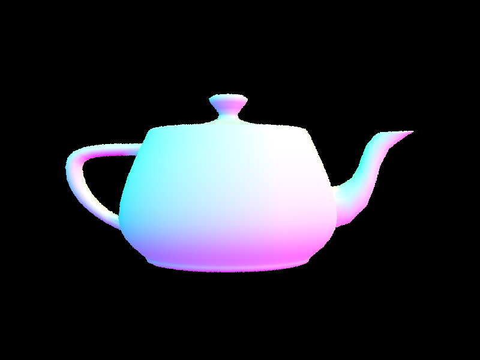

Assignment 3: PathTracer
Simon Tsui
In this project, I implemented ray tracing. There were many aspects to get ray tracing up and running. I had to take into account factors such as:
- the point from where we are viewing the object at
- object space vs world space
- Bounding Volume Hierarchy to speed up how we trace rays
- Accounting for Direct and Indirect Illumination
Part 1: Ray Generation and Intersection
What I implemented: Generating Camera Rays, getting pixel samples, and testing intersections with primitives (triangles and spheres)
Generating Camera Rays: We need to convert sensor sample coordinates (on the range of 0 to 1) to camera coordinates (on the range of -tan(hFov/2) to tan(hFov/2))
We sample pixels by generating rays at different (x, y) corodinates
To calculate whether or not a ray intersects with a primitive, I referred to the equations on the following slide.

For there to be an intersection, the following have to be true: t >= 0, 0 <= b1 <= 1, 0 <= b2 <= 1, 0 <= 1 - b1 - b2 <= 1
We can then use these values (b1, b2, 1 - b1 - b2) as the coefficients for barycentric coordinates(p0, p1, p2).
|

For there to be an intersection, only if b^2 - 4ac >= 0 and t is between min_t and max_t
|
When we intersect with a primitive, we update ray.max_t to time of the intersection so that we only consider other primitives who are closer to the ray origin than the current one.
Part 2: Bounding Volume Hierarchy
What I implemented: constructing BVH, Intersecting the bounding box, and intersecting the scene in general.
We construct the BVH by getting the centroid of each primitive and calculating the range along each axis. We take the axis with the largest range, get the midpoint and partition the primitives iterator along that axis. We do that repeatedly until the child nodes have less primitives than the max_leaf_size. As we are building out the BVH, we set the left and right children to the child calls and split the iterator so we only have to check the smaller list of primitives at each node.
|
Root node BVH
|
One recursive call of BVH: Right half
|
|
Very large dae file
|

Teapot.dae
|
Time it took to render ../dae/meshedit/cow.dae without BVH: 8.42 seconds
Time it took to render ../dae/meshedit/cow.dae with BVH: 0.0483 seconds
Time it took to render ../dae/meshedit/MaxPlanck.dae without BVH: 96.5 seconds
Time it took to render ../dae/meshedit/MaxPlanck.dae with BVH: 0.0595 seconds
Because BVH turns the operation from O(N) to O(logN), the images render much quicker.
Part 3: Direct Illumination
Direct lighting is composed of zero-bounce and one-bounce illumination. Zero bounce means the light is coming directly from a light source. 1 bounce means that the light is bouncing off an object and we are using the object's reflectance to calculate the lighting.
For zero-bounce, we just computed the emission of the light source.
For one-bounce, we trace the ray from our viewpoint (the camera) to the object it touches (w_out). Then we sample possible rays that come towards the object(w_in) that could've contributed to L_out. We trace backwards along w_in trying to find the origin of the ray to see if its a light source. We sample either by using uniform hemisphere sampling or importance sampling.
Sampling uniform hemisphere: We sample the hemisphere above the object intersection point uniformly. "Above" is defined using the object's normal which is defined as a vector (0, 0, 1). Anything direction is above the object will also have a positive z-value. Each w_in is equally likely to be sampled. If the point we hit belongs to a light source, we factor in its light emission.
In importance sampling, we only sample from lights. If there are no objects in between the light source and our current object then we factor in the light's emission.
 Estimator as to how the light samples were factored in where f is the reflectance, L is the emission, cos is the angle and p is the direction sampling probability.
Estimator as to how the light samples were factored in where f is the reflectance, L is the emission, cos is the angle and p is the direction sampling probability.
|
|
Bunny rendered from direct light sampling only.
|
Uniform hemisphere sampling vs Importance Sampling
|
4 camera rays per pixel, 8 samples per light, Uniform hemisphere
|
4 camera rays per pixel, 8 samples per light, Importance
|
|
16 camera rays per pixel, 8 samples per light, Uniform hemisphere
|
16 camera rays per pixel, 8 samples per light, Importance
|
|
32 camera rays per pixel, 32 samples per light, Uniform hemisphere
|
32 camera rays per pixel, 32 samples per light, Importance
|
Changes to samples per light
|
L = 1
|
|
L = 2
|
|
L = 4
|
|
L = 16
|
|
L = 64
|
Uniform hemisphere sampling comes out much more granular. This is because of the posssiblity of noise in our pixels. Neighboring pixels can have different number of samples hitting light sources. Meanwhile, importance sampling uses our information about the lights to only sample the lights so it converges faster.
Part 4: Global Illumination
I implemented the at_least_one_bounce_radiance function to get indirect lighting.
- We bounce at least once, so that means calculating the current radiance and then recursively calling our at_least_one_bounce_radiance function
- After the first bounce, we use russian roulette to cut off recursive rays. This is done with probability p of termination.
- We also have to consider whether or not the ray intersects with anything in the scene. If it's not intersecting with anything then its not bouncing off of anything so there's nothing to recurse.
- If a ray reaches max_depth we stop recursively calling the function entirely.
Sample pictures generated by global illumination
|
Spheres
|
Bunny
|
|
Dragon
|
Dragon
|
Bunnies with m = 0, 1, 2, 3, 100
|
max ray depth 0
|
 max ray depth 1
max ray depth 1
|
 max ray depth 2
max ray depth 2
|
|
max ray depth 3
|
max ray depth 100
|
Samples per pixel rates (1 to 1024)
|
Sample rate 1
|
Sample rate 2
|
Sample rate 4
|
Sample rate 8
|
|
Sample rate 16
|
Sample rate 64
|
Sample rate 1024
|
Part 5: Adaptive Sampling
The idea of adaptive sampling is that not every pixel needs to have the same number of samples. Some pixels will converge faster than other. We calculate the mean and variance at regular intervals to generate a 95% confidence interval for the actual illuminance of the pixel.
|
Actual picture
|
Number of samples needed to converge. (Red is more samples, blue is less samples)
|